Find & Shutdown Snowglobe
At first glance, this maze invites brute force. In reality, it’s a recognition puzzle that can be solved without exploring more than a single room. The solution lies outside the Data Center walls, hidden in plain sight.
Challenge Overview
To stop Frosty's plans, we must navigate a confusing maze inside the Data Center to locate and shut down the Snowglobe Machine.
Getting to the Challenge
If you need help getting to the Data Center (Deprecated) door, see Act 1's Neighborhood Watch Bypass
When I stepped into the Data Center (Deprecated), I found a dark and dusty room living up to its name. A single door to the right led to the Data Center Corridors. There, some parts of the path were marked by completely pitch-black floors, matching the hint we received. I followed the path finding another challenge, the Hack-a-Gnome factory, was off to the side. However, I continued east following the hint about the "far East wing." Following the dark paths eastward, I soon arrived at the next puzzle location: a small room with doors arranged all around me:
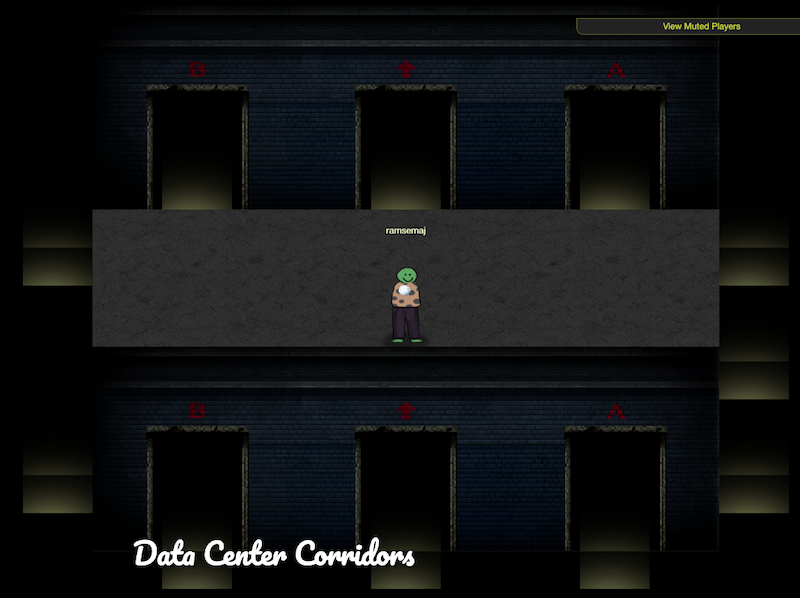
There were labels above doors with an arrow in the center door and "A" and "B" on either side. This was repeated for each wall of the room. Any of these doors will take you to the actual beginning of the challenge/maze that looks like the room above.
Solution Steps
After some trial-and-error, you discover that only one door keeps you in the puzzle, leading to a room identical to the start. All the other doors dump you back outside. The trick, as the hints suggested, is from a code located outside the building, displayed below:
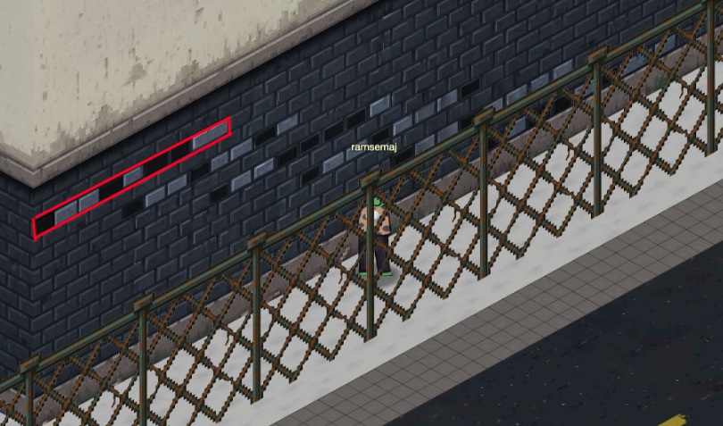
These black and grey bricks contain a secret message. They represent binary data, the language of computers using only 0s and 1s. Here’s how we translate the bricks:
- Black Bricks ◼️ = 0
- Grey Bricks ◻️ = 1
The pattern of bricks gives us an 8-bit string (a byte) for each section. When you convert that binary data into letters using the ASCII standard (Wikipedia on ASCII), you get the word "Konami" spelled backwards. I did this using CyberChef with the following (recipe):
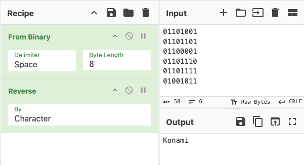
The word "Konami" is a reference to a Japanese video game developer. They included a common cheat code in some of their games starting back in the 1980s that is now known as the Konami code (Wikipedia, ↑↑↓↓←→←→BA). This gave you 30 starting lives in the NES game Contra whose image is shown at the top. Since the binary message was spelled backwards, I used the reverse Konami Code as the solution to the maze, AB→←→←↓↓↑↑. Following these directions (with North pointing up), I made it to Frosty’s Snowglow Lab! Note, for the letters A and B, any door labeled A or B will work, and for the directions, choose any of the 3 doors corresponding to that direction.
Side Note: 10th Anniversary Shout-Out
Fun fact: The Konami Code was also used in the 2015 SANS HHC, 10 years ago! This year's challenge pays homage to that classic moment in HHC history as we celebrate the 10th anniversary of the "in-game world" format.
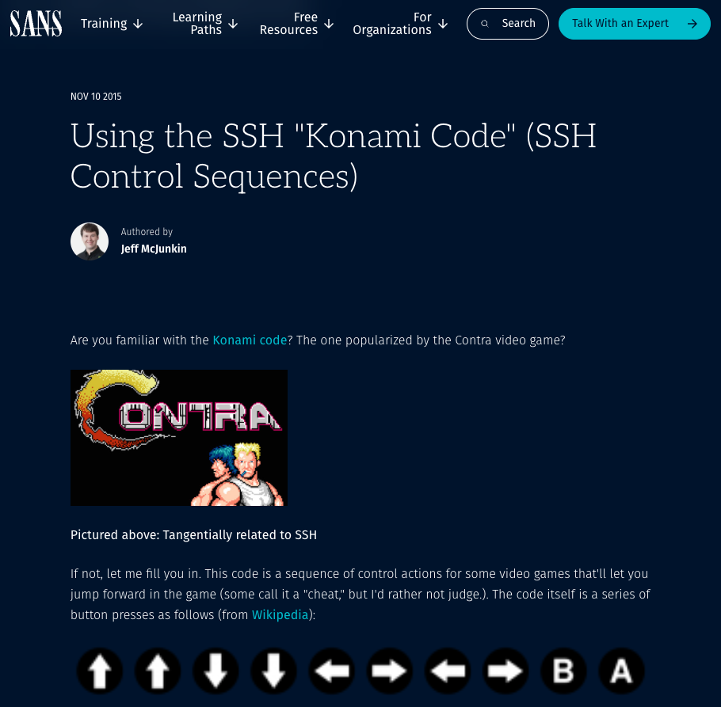
https://www.sans.org/blog/using-the-ssh-konami-code-ssh-control-sequences
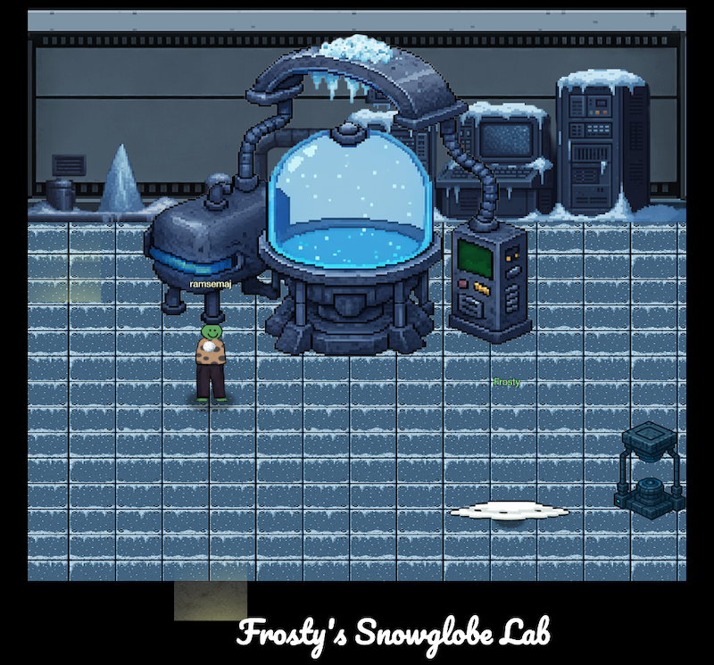
Upon completing this challenge, I was rewarded with a Snow Crystal. Its description hints at a certain movie (Disney’s Frozen, perhaps?):
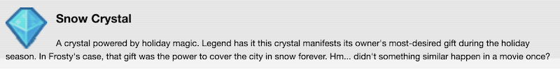
🔀 Alternate Solution - Bruteforce with WebSocket Hacking
While the Konami Code is the intended solution, another way to solve this maze is to bruteforce your way in. With 10 rooms and 12 doors in each, you'd need to manually try at most 120 attempts to find the correct exit. That's a lot of virtual walking!
Instead of manually trying every door, we can save a lot of time by "hacking" the game and automating the process. This involves understanding how the game communicates "under the hood" using a specialized tool called a proxy.
Background Info - Proxies
In simple terms, a proxy server (Wikipedia) acts as a middleman. I used a type of proxy that sits directly on the system (my computer) to intercept and study the game's traffic. Here are two popular choices for this kind of proxy:
- Burp Suite: https://portswigger.net/burp
- ZAP (OWASP Zed Attack Proxy): https://www.zaproxy.org/
By studying the traffic using a proxy, I quickly learned that all navigation on the map was done via WebSockets.
Background Info - WebSockets
A WebSocket is a communication protocol that allows your browser and the game server to talk to each other simultaneously over a single connection (Wikipedia on WebSockets). You can view these WebSocket messages right in your browser's development tools (under the Network tab), or in a dedicated proxy application like Burp Suite.
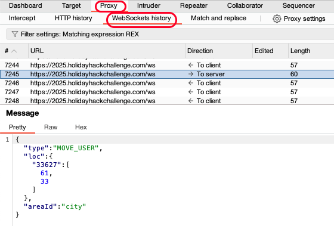
Analyzing the WebSocket Messages
When studying the traffic using the proxy, I found two main types of messages being sent to
the
server that controlled movement: MOVE_USER and REX (perhaps
meaning
Room EXit).
| Message Type | Purpose | JSON Example |
|---|---|---|
| MOVE_USER | Updates the server on the player's ID, XY coordinates, and current area. | {"type":"MOVE_USER","loc":{"33627":[60,34]},"areaId":"city"} |
| REX | Tells the server to exit the current area using a door at specified coordinates. | {"type":"REX","cell":[1,4]} |
The crucial finding was this: I didn't need to be physically standing at a door to exit it! I could manually issue the REX command with any door's coordinates, and the server would let me enter that door instantly from anywhere in the current area. I used Burp Suite's Repeater to execute this command repeatedly:
- After having my movement actions logged by the proxy, in BurpSuite go to the Proxy tab -> WebSockets history subtab.
- Right-click a REX message and select "Send to Repeater".
- In the Repeater, I could change the XY coordinates on the REX message and send it instantly, testing all door possibilities without any walking!
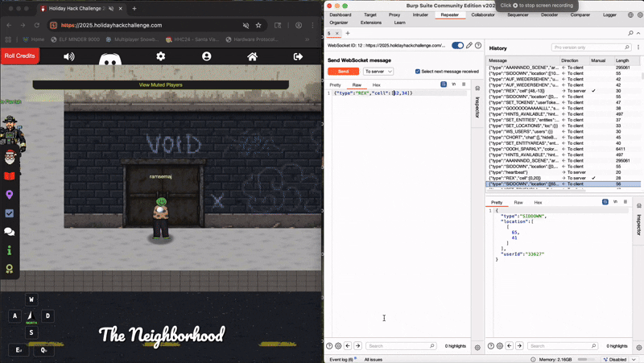
Super-Optimized Solution: Hacking the Map
While skipping the walking was a great time-saver, we can be even smarter. Why manually hunt
for
door coordinates when the game already knows where everything is? The full map data for each
area is contained within a WebSocket message type called AAANNNDD_scene.
This map data was brilliantly documented by 0xdf in his 2022 grand prize winning write-up (which includes a video!). In the map data:
- Spaces indicate unwalkable areas.
- 1's indicate walkable areas.
By pulling this map data, we can instantly identify the coordinates of all walkable areas and find the exact door locations, saving even more time. Here is the AAANNNDD_scene message for the Data Center Corridors, captured from Burp Suite:
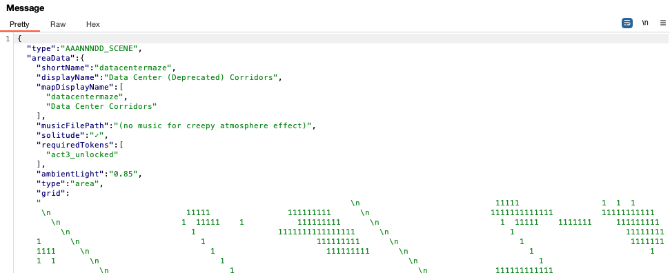
Quick Tip for Formatting: If you get raw data like this from BurpSuite, you can use this CyberChef recipe to strip out all the messy newline characters (\n) and quotes to view the map as intended.
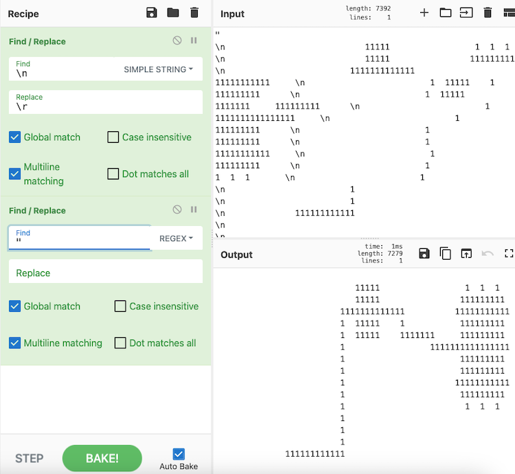
Map Visualizations
By looking at the full map data, we can confirm the layout of the world. The map shows the initial rooms we traversed and then details the 10 rooms of the maze. The top section shows the paths connecting the Data Center (Deprecated) room, the Hack-a-Gnome challenge entrance, and the initial far-east room:
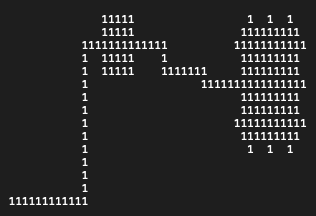
Below that, you can see the layout of the 10 maze rooms we are trying to solve with the bottom room looking like the final room:
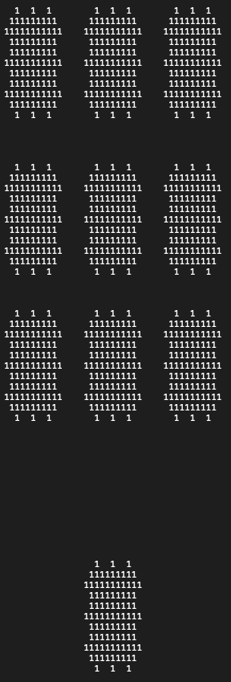
This can be verified in the game if you zoom out in your browser:
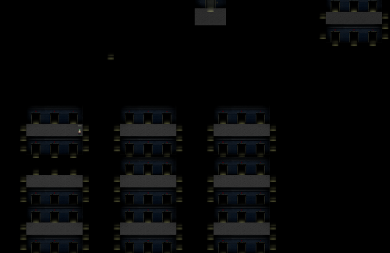
Coordinates and Offset
Before using the coordinates from the map, we need to account for two crucial differences between the static map image and the game's live WebSocket data:
- Coordinate Offset: I found a consistent offset of (-5, -16) between the coordinates on the map image and the coordinates used in the game's WebSocket messages. For example: A map point of (21, 88) corresponds to a game coordinate of (16, 72).
- Y-Axis Inversion: In the game's coordinate system, the Y-axis increases downward. This is common in computer graphics but is the opposite of what you see in a standard algebra graph.
Using the reversed Konami code order and applying the required offset, here are the final coordinates for the intended path. If you are using the REX exploit, you only need to jump to the very last coordinate (15,73) to finish the challenge!
| Step | Door Direction | Map Coordinate |
|---|---|---|
| 1 | A | (3, 20) |
| 2 | B | (27, 20) |
| 3 | → | (20, 25) |
| 4 | ← | (-5, 40) |
| 5 | → | (35, 40) |
| 6 | ← | (10, 40) |
| 7 | ↓ | (30, 59) |
| 8 | ↓ | (0, 59) |
| 9 | ↑ | (15, 49) |
| 10 | ↑ | (15, 73) |
Key Learnings
- Binary Encoding: Converting visual data (bricks) to binary (0s/1s) and ASCII text.
- WebSockets: Recognizing them as the protocol for real-time game commands.
- Traffic Analysis: Using a proxy (Burp Suite) to intercept and study network messages.
- Trust Vulnerabilities: Finding server flaws where client location
checks are skipped (the
REXexploit). - Automation: Using tools like Repeater for automated bruteforce attacks.
Challenge Reference Material
Challenge Descriptions
Classic Mode Description
You've heard murmurings around the city about a wise, elderly gnome having a change of heart. He must have information about where Frosty's Snowglobe Machine is. You should find and talk to the gnome so you can get some help with how to make your way through the Data Center's labrynthian halls. Once you find the Snowglobe Machine, figure out how to shut it down and melt Frosty's cold, nefarious plans.
CTF Mode Description
When playing through HHC 2025 in the traditional world mode, you'd have to find your way through a maze in the Data Center, similar to HHC 2015. But, since that is mostly for fun and story, and since you're playing CTF mode, you don't have to! Just click on the item below to progress through this step, which involves finding Frosty's Snowglobe Machine and shutting it down.
Official Hints
Talk to Elder Gnome right outside the train station for hints:
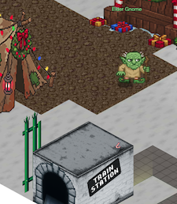
- The Elder Gnome said the route to the old secret lab inside the Data Center starts on the far East wing inside the building, and that the hallways leading to it are probably pitch dark. He also said the employees that used to work there left some kind of code outside the building as a reminder of the route. Perhaps you can search in the vicinity of the Data Center for this code.
- The Elder also recalled a story of another "computer person" like yourself who managed to find an intern that got lost inside the Data Center about 10 years ago. But that was before the reconstruction, so the current route likely isn't exactly the same. Maybe you can search for the Data Center's past in the historical archives that is the Internet for more information that may be helpful.